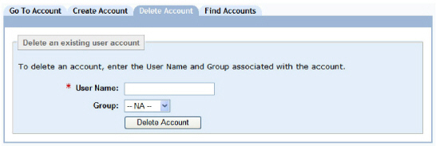
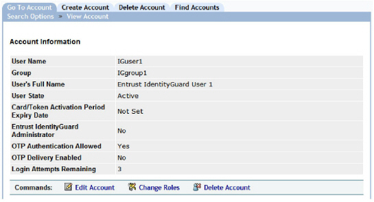
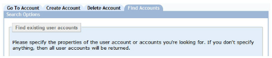
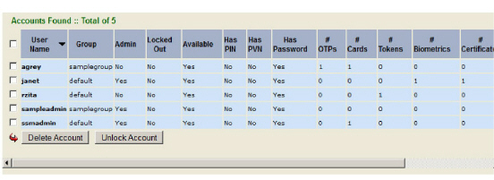
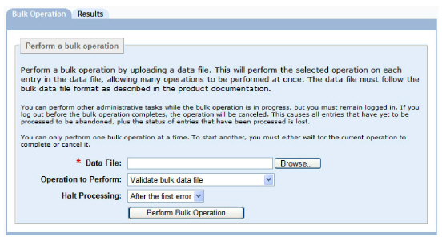

|
IdentityGuard Server 12.0 Administration Guide |
|
IdentityGuard Server 12.0 Administration Guide |
Delete users when they leave your organization or when they no longer require Entrust IdentityGuard authentication. To delete a user, your role must include access to the user’s group, and the userDelete permission. For more information about roles, see Configuring roles.
Note: To retrieve deleted account information, you must restore the user account from a backup of the repository.
If you are deleting a user and you are using a directory to store the user accounts, Entrust IdentityGuard only removes its attributes from the user entry. To delete the user entry from the directory, use the directory administration tools.
Note: You cannot view corrupted user records in the Administration interface; however, you can delete the account on the Delete Account tab by entering the account name.
Use the following procedures to delete one or more users:
● To delete a user from the Delete Account tab
● To delete a user from the View Account page
● To delete multiple users simultaneously
● To delete multiple users with bulk operations
Attention: If you delete users who have grid cards in the Current state, the grid cards are deleted, too, and cannot be reused. If you want to be able to reuse the grid cards, unassign them before deleting the user.
To delete a user from the Delete Account tab
1. Log in to the Entrust IdentityGuard Administration interface as the administrator.
 On the
Windows computer where Entrust IdentityGuard is installed
On the
Windows computer where Entrust IdentityGuard is installed
2. In the main menu, click User Accounts.
The User Accounts page appears.

3. Click the Delete Account tab.
4. In the User Name field, enter the user name or alias of the user account you want to delete.
5. Optional. In the Group drop-down list, select the user’s group.
6. Click Delete Account.
7. A dialog box prompts you to confirm the deletion. Click OK.
To delete a user from the View Account page
8. Log in to the Entrust IdentityGuard Administration interface as the administrator.
On the
Windows computer where Entrust IdentityGuard is installed
2. In the main menu, click User Accounts.
The User Accounts page appears.
3. Find a specific user in one of two ways:
● use the Go To Account tab (see To search for information about one user)
● use the Find Accounts tab (see To search for information about one or more users)
The View Account page appears with account and authentication information for the specific user.

4. Click Delete Account.
5. A dialog box prompts you to confirm the deletion. Click OK.
To delete multiple users simultaneously
9. Log in to the Entrust IdentityGuard Administration interface as the administrator.
On the
Windows computer where Entrust IdentityGuard is installed
2. In the main menu, click User Accounts.
The User Accounts page appears.

3. Click the Find Accounts tab.
4. Use as many of the search options as necessary to find the users you want to delete. (See To search for information about one or more users for details.)
5. Click Find Accounts.
The Search Results page displays all users that match your search parameters.

6. Select the box to the left of each user you want to delete, or select the check box beside User Name to select every user.
10. Click Delete Account.
11. A dialog box prompts you to confirm the deletion. Click OK.
To delete multiple users with bulk operations
1. Create a bulk file (see Create a bulk file).
2. Log in to the Administration interface
3. In the main menu, click Bulk Operations.
The Bulk Operations page appears.

4. Click Browse to locate the bulk file.
5. From the Operation to Perform drop-down list, select Delete users.
6. From the Halt Processing drop-down list, select the number of errors to allow before processing stops due to too many errors. (See Create users through a bulk operation for an explanation of Halt Processing options.)
7. Click Perform Bulk Operation.
8. A dialog box prompts you to confirm the deletion. Click OK.
The Bulk Operation in Progress page appears. The size of your bulk operation directly affects the time the operation takes to process. This page indicates the initial status of the operation.
9. (Optional) While Entrust IdentityGuard processes the bulk file, you can complete the following:
● To view the current status of the bulk operation, click Update Results. (The Results page is also updated automatically every 10 seconds.)
● To cancel the bulk operation, click Cancel Operation.
Note: If you cancel a bulk operation, Entrust IdentityGuard keeps all changes it made while it processed the bulk file. You cannot undo a bulk operation. See Limitations of bulk operations for more information.
When Entrust IdentityGuard completes the bulk operation, the Results page appears.
10. Click Done to return to the Bulk Operation page.